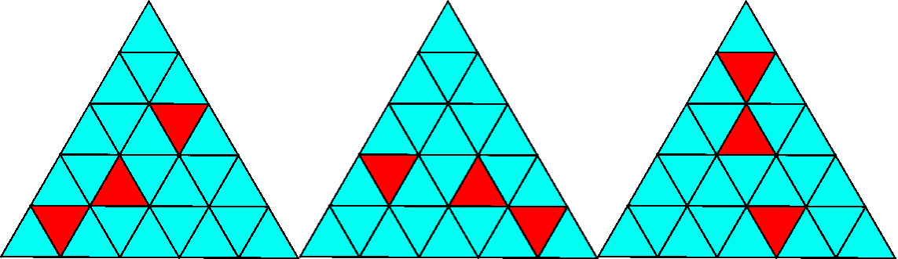

Triangle Coloring
This is a "5-Check" triangle and is being colored using Red and Cyan, such that three small triangles are Red and the rest are Cyan.
Two patterns are called "clones" if one can be rotated one-third ways to get another.
So the three patterns below are "clones."

In an "N-Check" triangle, a set of patterns is called "unique" if there are no two patterns which are clones of each other.
PS: Sorry for the bad image quality.